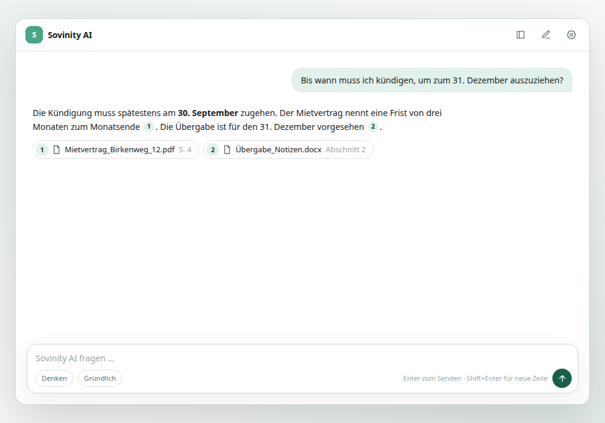
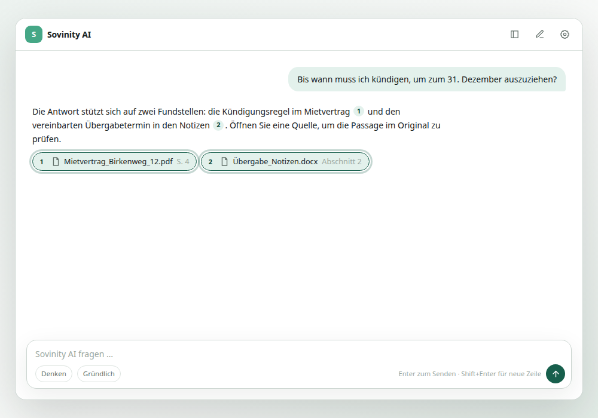
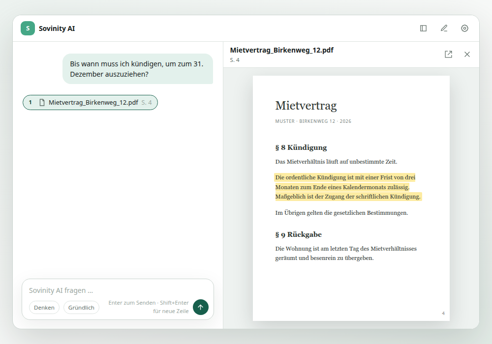

Einlesen
Wählen Sie lokale Dokumente aus und machen Sie sie durchsuchbar. Ihre Unterlagen müssen dafür nicht in eine öffentliche Cloud umziehen.
Sovinity · Private Document Intelligence
Stellen Sie Fragen zu Ihren lokalen Dokumenten. Sovinity zeigt Antworten mit überprüfbaren Fundstellen — ohne dass eine öffentliche KI Ihre vertraulichen Inhalte kennen muss.



Vom Archiv zur Antwort
Sovinity erschließt lokale Dateien mit privater KI. Die Originaldokumente bleiben der Maßstab — nicht die überzeugend klingende Antwort.
Wählen Sie lokale Dokumente aus und machen Sie sie durchsuchbar. Ihre Unterlagen müssen dafür nicht in eine öffentliche Cloud umziehen.
Stellen Sie Fragen in eigenen Worten. Texterkennung und semantische Suche erschließen auch gescannte Unterlagen.
Lesen Sie die Antwort und folgen Sie den Fundstellen zurück zum zugrunde liegenden Dokument.
Datenhoheit als Architektur
Sovinity ist für lokale oder isolierte Installationen konzipiert. Dateien, extrahierter Text, Vektoren und KI-Modelle können in der von Ihnen kontrollierten Umgebung bleiben. Wo Daten verarbeitet werden, soll sichtbar und überprüfbar sein.
Ein Kern, zwei Perspektiven
Ob Haushaltsunterlagen oder vertrauliche Arbeitsdokumente: Sovinity hilft, Informationen in lokalen Dateien schneller zu finden und zu belegen.
Sovinity Home
Fragen zu Versicherungen, Steuern, Schule, Verträgen und Rechnungen stellen und die Antwort im Original prüfen.
Sovinity Private Workspace
Fragen zu lokalen Projekt-, Mandats- oder Organisationsdokumenten stellen und Fundstellen nachvollziehen.
Warum Sovinity
Eine Antwort ist erst nützlich, wenn Sie ihre Quelle prüfen können. Sovinity verbindet Fragen zu Ihren Dokumenten mit nachvollziehbaren Fundstellen.
Häufige Fragen
Nein. Sovinity unterstützt lokale oder private Verarbeitung. Der konkrete Verarbeitungsweg hängt von Ihrer Installation ab.
Sovinity verarbeitet importierte lokale Dateien. Texterkennung erschließt auch gescannte Unterlagen; semantische Suche hilft beim Wiederfinden.
Nein. Für das Fragen und Suchen können Sie Ihre vorhandenen lokalen Dokumente als Quellen nutzen.
Wir setzen auf dieser statischen Website selbst keine Analyse-, Marketing- oder externen Schrift-Dienste ein. Details zum Hosting stehen in der Datenschutzerklärung.
Sovinity AI
Vergleichen Sie monatliche und jährliche Zahlung oder schreiben Sie uns zu Ihrem Einsatz mit lokalen Dokumenten.